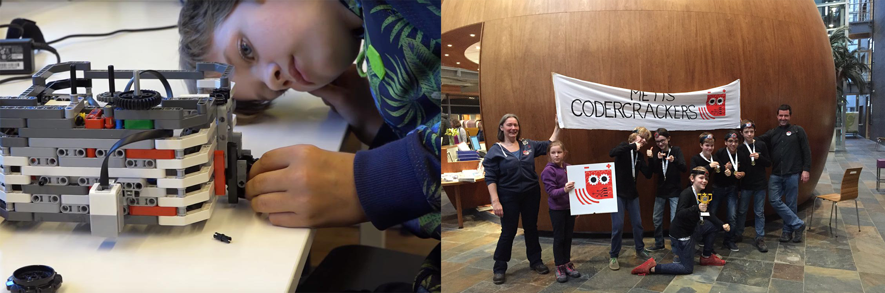

Hoi ik ben Otto Plasmeijer, ik ben 13 jaar oud ik woon in Amsterdam in ik zit in de Coderclass. De Coderclass is een profiel klas waar je leert coderen en programmeren, ik vind het heel leuk want ik zit heel vaak achter mijn computer, en door de Coderclass weet ik hoe een computer werkt. Wat ik heb leukste vind is een website maken. Ik hou ook van skaten, en dan vooral steppen (daar kan je meer over lezen bij mijn hobby’s ). met de coderclass doen we vele projecten en dat vind ik heel leuk. Ik vind het leuk om voor een kant te werken, en dat je een resultaat hebt waar een klant blij mee is vind ik leuk.
- Robotica
Ik vind robotica heel leuk en we oen ook mee aan wedstrijden. Ons team heet de CodeCrackers. Het is een heel erg leuk team met andere kinderen uit de CoderClass. Meestal doen we mee aan FLL, dat is een hele grote en wereldwijde wedstrijd. We hopen dit jaar naar de BeneluxFinale te gaan. Maar of dat lukt moeten we nog zien.